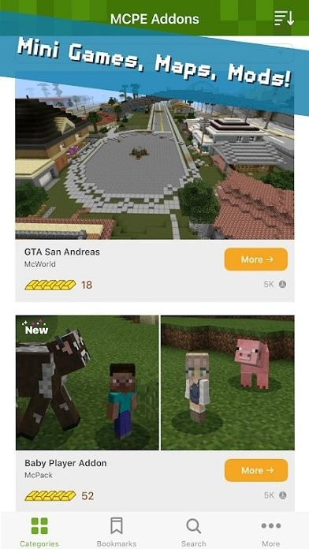

MCPE Addons 到底值不值得掏钱——一个模组党的付费决策账本
从免费版的功能边界到重度玩家的时间账，算清楚 MCPE Addons 对不同使用强度的玩家值不值这笔钱。
开头先抛问题：它到底值不值得掏钱？
MCPE Addons 是目前 Minecraft 基岩版（手机/平板/Win10）生态里最主流的模组管理工具。从安装 McPack 到激活资源包和行为包，从找 McWorld 存档到备份自己的世界——几乎所有玩基岩版模组的人手机上都装着它——去官网就能找到。
但装了之后，不少人会问同一个问题：免费版够用吗？要不要掏 Pro 的钱？
我认真算了半个月的账——从每天打开的次数、每次省的时间、到替代方案的成本。下面是我的账本。
定价拆解：免费版给什么，付费版多什么
先摆事实。MCPE Addons 的免费版和 Pro 版之间的边界，核心就四个字：无限制。
免费版的功能覆盖了模组使用的完整流程——从分类浏览、关键词搜索、详情页查看 McPack 和 McWorld 的介绍与评论，到一键导入 Minecraft、在游戏内激活资源包和行为包、管理已安装的包、甚至帮你定位手机存档的具体目录。这些日常操作，免费版全能搞定。
Pro 版解锁的，是几个"高频用户才会碰"的功能：广告移除、每日推荐推送、收藏夹无限容量（免费版有上限）、以及高级搜索过滤器。但说实话——对于大多数模组玩家来说，广告是几秒就能跳过的插屏、推荐推送关掉更省心、收藏夹上限够存 50 个包——真正让人纠结的不是"缺了什么功能"，而是"省的时间值不值这个价"。
算账：三类人的三种账本
轻度用：每月装一次新包的 casual 玩家
这类玩家的典型场景是：偶尔看到朋友分享一个 McWorld 存档、或刷到一个"幸运方块" McPack，点开装上玩一天就卸掉。
免费版够不够？完全够。 每月打开不超过 10 次，每次操作就是搜一下、点下载安装、跳 Minecraft 里激活——整个流程不超过两分钟。中间那 5 秒的插屏广告，趁加载完的瞬间跳过就行。就算 Pro 版能省掉这 5 秒，折算下来一个月省不到 100 秒，连刷一个短视频的时间都不够。
结论：别花钱。把钱留给下一款皮肤包或服务器充值卡。
主力用：每周要管理 3~5 个 McPack 的模组玩家
你可能在玩一个"魔法模组 + 新生物群系 + 自定义战斗手感"的混合包组，每周都会找新的 McPack 试装、对比、卸载。收藏夹里躺了 20 多个候选包，每次激活行为包都要翻资源包菜单确认配对。
免费版的瓶颈开始显现了。 免费版的收藏夹上限在你攒到第 30 个候选包时就会提示"满了"，得手动删几个旧的才能加新的。每次打开首页默认的热度排序，你已经翻到第 8 页还没找到上次看到的那个"中世纪建筑"资源包——它被新上的热门包挤下去了。
但这些瓶颈值不值 Pro 的钱？我的判断是"看频率"。 如果你每周花在找包、整理收藏夹、翻热度榜上的时间加起来超过 20 分钟，Pro 省的时间开始值得算一算——高级搜索过滤器能按"最近一周更新 + 4 金锭以上 + 建筑类"精准过滤，不用在首页刷；收藏夹无限容量让你不用定期清理；没广告让每次切换页面少等几秒。
我的账本：Pro 月费约等于 3 杯奶茶的钱。每周省 20 分钟 × 4 周 = 每月省 80 分钟。如果你把这 80 分钟用来多玩一个 McWorld，这笔钱就值了——毕竟基岩版模组生态的内容量大，但好包难找，找包本身就是一件"花时间换体验"的事。
重度用：McPack 作者或模组测评玩家
你自己在做行为包、或每周要测试 10+ 个 McPack 给粉丝出测评视频。手机里存了 200+ 个 McPack 文件，每个 McWorld 你都有至少 3 个备份副本（怕 Beta APIs 实验开关不可逆——这块在addons文档上有详细说明）。收藏夹按"建筑类 / 战斗类 / 生存类 / 跑酷类"分了标签组，每个组都有 40 多个候选。
免费版在你手里就是个半成品。 收藏夹上限卡得你每隔三天就得忍痛删一批；高级搜索过滤器缺失意味着你每次要找"带刷怪塔 + 4 金锭 + 100 以下下载量"的小众精品包，只能在搜索页手动翻评论区里的关键词；插屏广告在你一天打开 30 次的频率下，累计吃掉将近 2 分钟。
这笔账不用算——Pro 必买。 省下的不只是时间，更是测试效率和素材整理成本。MCPE Addons 对重度用户来说已经不是"一个工具"，而是整个模组创作流程的入口。
替代方案：不付这笔钱有什么别的路
说实话，没有真正的替代品——MCPE Addons 在基岩版生态里几乎是独一份的存在。但有两条"凑合一下"的路：
路一：手动折腾文件系统。 你可以用任何文件管理器直接找到手机内部存储 games/com.mojang/minecraftWorlds/ 目录，手动复制 McPack 文件夹、手动导入 McWorld 存档。这条路完全免费，但代价是每次操作要多花 3~5 分钟找路径、解压文件、重命名——省了 Pro 月费，但花掉的时间换算成工时，可能比 Pro 还贵。
路二：网页端下载 + Minecraft 内置导入。 直接用浏览器逛模组分享网站（比如 mcbe addons 社区），下载 .mcpack 文件后点文件管理器里的"用 Minecraft 打开"。这条路的问题是没有统一的评分体系——你不知道下载的包是 4 金锭还是 1 金锭，得自己一个个试装踩坑。MCPE Addons 的金锭评分和评论区在这时反而成了最值钱的东西。
结论：三秒钟对号入座
| 你是哪种玩家 | 决策 | 一句话理由 |
|---|---|---|
| 每月装一次新包的 casual | 不用付 | 时间成本远低于 Pro 费用 |
| 每周管理 3~5 个 McPack 的主力 | 再等等，看省的时间够不够 20 分钟/周 | 边界模糊，先攒两周时间账再决定 |
| McPack 作者 / 模组测评 | 闭眼付 | 免费版的功能缺口直接影响创作效率 |
最后补一条我的个人建议：如果你决定升级 Pro，选年付不选月付——年付单价大约是月付的 60%，而且年付用户通常会拿到一些仅限老用户的内测功能。反正 MCPE Addons 这种入口级工具，你大概率会用一整年。

这套资料在三个仓库都能拿到：我把整理好的 MCPE Addons 文档分别放在 GitHub、Gitee 和 GitCode 上了——GitHub 是完整版，Gitee 国内访问更快，GitCode 做一份备份以防万一。三个仓库的目录结构完全一致，找起来都方便。